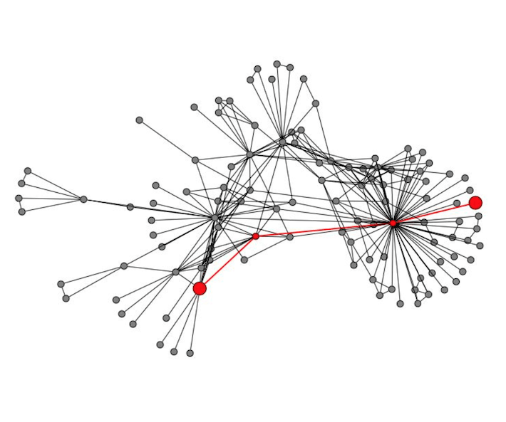

18 maig 2022, Anònims

Com llegim l'Univers?
En Lluís Galbany ens ha parlat de les diferents proves existents de l'expansió accelerada de l'Univers i de com es mesuren.

Què es fa al CERN?
En Jordi Nadal ens ha explicat el model estàndard de particules elementals i com s'han anat trobant als acceleradors.

Xarxes per representar el món
En Martí Cuquet ens ha explicat com son i com es formen les xarxes a la natura i com en podem treure informació.